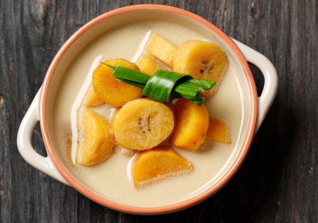

Mie Rebus Medan

Descriptions
Kolak pisang is a popular Indonesian dessert made from bananas cooked in coconut milk, palm sugar, and sometimes flavored with pandan leaves. It's a traditional dish enjoyed during Ramadan and other festive occasions in Indonesia. Here's how it's typically made
Ingredients
- Bananas: Usually, pisang kepok (cooking bananas) or pisang raja (banana cultivar with a firmer texture) are used. These are peeled and sliced.
- Coconut Milk: Thick coconut milk is used to create a creamy base for the dessert.
- Palm Sugar (Gula Melaka): This gives the dessert its characteristic sweetness and caramel-like flavor. It's usually grated or chopped before use.
- Pandan Leaves: These are optional but add a subtle, fragrant flavor to the dish. They are tied into a knot or folded to release their aroma during cooking.
- Water: Used to thin out the coconut milk and create the sauce.
Steps
Prepare the Ingredients
- Peel and slice the bananas into rounds.
Cooking Process
- In a saucepan, combine coconut milk, water, and palm sugar. Stir over medium heat until the palm sugar is completely dissolved.
Add Bananas and Pandan Leaves
- Add the sliced bananas and pandan leaves (if using) to the saucepan. Stir gently to combine.
Simmer
- Bring the mixture to a gentle simmer over low to medium heat. Cook until the bananas are tender and the flavors have melded, stirring occasionally to prevent sticking. This usually takes about 10-15 minutes, depending on the thickness of the banana slices.
Serve
- Once the bananas are cooked through and the sauce has thickened slightly, remove from heat.
- Serve kolak pisang warm or chilled, depending on your preference.
Variations
- Adding Other Ingredients: Some variations of kolak pisang include adding sweet potatoes, cassava, or other fruits like jackfruit or sweet potatoes.
- Seasonings: In some regions, a pinch of salt may be added to balance the sweetness.
Kolak pisang is not only delicious but also reflects the rich culinary heritage of Indonesia, particularly in its use of coconut milk and palm sugar, which are staples in Indonesian desserts.